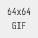

样式内容比较多，就不放出来占地方了，以后按钮伪类的设置可参考下面这个 style 里的写法。
当按钮使用了 xj-ripple 的效果时，按钮的相关样式设置可以参考本文件的写法，鼠标在 hover 状态下调整背景色，rgb 的值各减 f(16)，并且有 xj-ripple 的效果，就不再需要为按钮设置 :active{} 伪类样式了。
波纹颜色由 background-color 和 box-shadow 这两个样式决定，但它们的值其实都是 currentColor，也就是说，波纹的颜色其实最终是取决于 color 样式的设置，在默认的情况下，波纹的颜色和文本的颜色相同。
xj.ripple.css 文件中预设置了 8 种颜色，分别为 xj-ripple-primary, xj-ripple-success, xj-ripple-warning, xj-ripple-danger, xj-ripple-extra, xj-ripple-info, xj-ripple-white, xj-ripple-black。
xj-ripple
xj-ripple-primary
xj-ripple
xj-ripple-success
xj-ripple
xj-ripple-warning
xj-ripple
xj-ripple-danger
xj-ripple
xj-ripple-extra
xj-ripple
xj-ripple-info
xj-ripple
xj-ripple-white
xj-ripple
xj-ripple-black
插件共有 4 个基础类名，.xj-ripple 不允许波纹溢出，.xj-ripple-out 允许波纹溢出，.xj-ripple-mid 不允许波纹溢出且波纹将自动水平垂直居中，.xj-ripple-out-mid 类名则是允许波纹溢出且波纹会自动居中。
xj-ripple xj-ripple-out xj-ripple-mid xj-ripple-out-mid
检测委托绑定的响应，由于事件采用了捕获的形式进行绑定，所以并不需要担心 event.target 会是其他的标签，捕获时顺序从上到下，肯定会先捕获到第一个 .xj-ripple-* 类名的标签，而不是捕获到其他的子元素。
xj-ripple
click
xj-ripple-out
click
xj-ripple-mid
click
xj-ripple-out-mid
click
由于是捕获绑定，从上到下进行，所以事件并不会重复触发，也就是说标签嵌套也没问题，即使 .xj-ripple-* 的元素中又嵌套了 .xj-ripple-* 元素，也不会相互起冲突，在哪里点击，就会在那个容器中响应波纹的。
xj-ripple
xj-
ripple
xj-ripple-out
xj-
ripple-out
xj-ripple-mid
xj-
ripple-mid
xj-ripple-out-mid
xj-
ripple-out-mid
波纹执行后，ripple 和 offset 节点会被自动移除，如果该参数为 true，则不会自动移除节点，方便测试。
debug:true
ripple 和 offset 节点会被添加到容器的最后面，如果该参数为 false，则节点会被添加到容器的最前面。
append:true append:false
默认响应鼠标左键，如果想响应中键和右键，那么可将 1, 2 添加进数组，该参数对 touch 触屏设备无效。
mouse:[0]
只响应左键
mouse:[0,1]
响应左键中键
mouse:[0,1,2]
响应左中右键
当标签设置了 disabled 属性或 .xj-ripple-disabled 类名或 cursor:not-allowed; 样式，标签被点击将不会响应波纹，当标签的上层标签有这些属性类名样式时，标签被点击也不会响应波纹，但如果 forbid 被设置为 false，则标签的上层标签有这些属性类名，子标签不受影响，还是会响应的，唯一例外的是 cursor:not-allowed 属性，这个属性会自动被子元素继承，所以即使设置了 forbid : false，子元素依旧不响应波纹。
设置了
disabled 属性
设置了
xj-ripple-disabled 类名
设置了
cursor:not-allowed 指针样式
父元素设置了
disabled 属性
所以子元素不响应
父元素设置了
xj-ripple-disabled 类名值
所以子元素不响应
父元素设置了
cursor:not-allowed 指针样式
所以子元素不响应
父元素虽然被设置了
disabled 属性
但子元素的 forbid = false
所以不受影响，还是可以响应
父元素虽然被设置了
xj-ripple-disabled 类名值
但子元素的 forbid = false
所以不受影响，还是可以响应
父元素设置了
cursor:not-allowed 指针样式
子元素总是会受到影响，无法响应波纹效果
因为这样式会自动继承，除非为设置其他的 cursor
设置了波纹的标签，可以通过为标签或标签的父级标签设置内联的 xj-ripple="{}" 属性来设置波纹的各种参数，而 inherit 参数是用于控制这个内联属性是否要实现继承，该参数默认为 true，也就是会自动的继承。
当标签和标签的父级标签都设置了该参数时，层级越低的标签，属性权重就越高，这种内联属性继承，最大的好处是，如果想为某个区域的波纹设置特殊参数，不需要逐个标签设置，只需要设置父容器，然后继承即可。
opacity:'0.75'
opacity:'0.75'
radius:'0%', color:'red'
opacity:'0.75'
radius:'0%'
color:'red'
属性继承
radius:'50%'
继承被覆盖
inherit:false
不继承的情况
该参数用于设置波纹节点的标签名称，之所以使用自定义的标签，是为了避免被标签选择器误选，在下例中，为了方便查看波纹节点的标签，我们还特意设置了 debug:true，这样的话节点就不会自动移除，方便检测。
debug:true
nodeName:'xj-ripple'
debug:true
nodeName:'custom-node-name'
debug:true
default
debug:true
classString:'testClass'
debug:true
default
debug:true
styleString:'font-size:16px;'
default opacity:'1'
default radius:'0%'
default color:'red'
width:'50px',
height:'50px'
width:'50%',
height:'50%'
minWidth:'200px',
minHeight:'200px'
minWidth:'200%',
minHeight:'200%'
maxWidth:'50px',
maxHeight:'50px'
maxWidth:'50%',
maxHeight:'50%'
width:'50px'
height:'50px'
extraWidth:'50px'
extraHeight:'50px'
width:'50%'
height:'50%'
extraWidth:'50%'
extraHeight:'50%'
left:'0px',
top:'0px'
left:'50%',
top:'50%'
left:'0px'
top:'0px'
offsetLeft:'5px'
offsetTop:'5px'
left:'50%'
top:'50%'
offsetLeft:'50%'
offsetTop:'50%'
debug:true
default
debug:true
transitionProperty:'opacity, transform'
transitionDuration:'250ms'
transitionTimingFunction:'ease'
transitionDelay:'0ms'
specialRatio 参数用于设置 .xj-ripple-mid 和 .xj-ripple-out-mid 模式下波纹的直径，默认值是容器最长那条边的 1.5 倍，一般是能覆盖到整个容器的(不含 border)，下例为了方便观察，使用 out-mid 模式。
default specialRatio:1 specialRatio:2
用 insertTarget 参数将波纹插入到其他容器中，如果没有设置 left / top 或 offsetLeft / offsetTop 参数，则波纹圆心默认总是在目标容器的中间，波纹参数只会在触发点击的那个节点上获取，与波纹的目标容器并没有关系，目标容器所需要做的，就是设置 position 样式不为 static，以此确保波纹能实现绝对定位。
span[class="box xj-ripple"]
[xj-ripple="{insertTarget:'self i'}"]
波纹将在这里响应
position:relative;
overflow:hidden;
span[class="box xj-ripple-out-mid"]
[xj-ripple="{insertTarget:'self i'}"]
波纹将在这里响应
position:relative;
overflow:visible;
parent
span[class="box xj-ripple"]
[xj-ripple="{insertTarget:'parent i'}"]
波纹将在这里响应
position:relative;
overflow:hidden;
parent
span[class="box xj-ripple-out-mid"]
[xj-ripple="{insertTarget:'parent i'}"]
波纹将在这里响应
position:relative;
overflow:visible;
span[class="box xj-ripple"]
[xj-ripple="{insertTarget:'#insertTag01'}"]
波纹将在这里响应
#insertTag01
span[class="box xj-ripple-out-mid"]
[xj-ripple="{insertTarget:'#insertTag02'}"]
波纹将在这里响应
#insertTag02
span[class="box xj-ripple"]
[xj-ripple="{insertTarget:function(target)
{ return target.querySelector('b'); }, }"]
ib
{createBefore:
function(event,element){ console.log(event,element) }}
{createAfter:
function(event,element){ console.log(event,element) }}
{removeCallback:
function(event,element){ console.log(event,element) }}
单标签元素，例如 img 或 input，由于它们不允许子标签的存在，所以也无法在这类标签中实现点击波纹效果。但是非要实现这个效果，也可以将单标签嵌在一个双标签之中(例如 div)，然后将类名添加在 div 上。
无嵌套的情况：

嵌套了的情况：
经过测试可以发现，margin 对于定位并没有影响，但 border 和 scrollbar 则会影响到定位，得把这些问题考虑上，当滚动条出现在左上角时，只有靠 offsetNode 的 DOMRect 才能准确的获取到容器的左上角位置。
实测发现，当滚动条在左侧时，Win10 的 IE11/18 会出现波纹漂移的情况，目前还不知道这是否为虚拟系统的 BUG，但一般波纹不会在有滚动条的容器中使用，且滚动条在左侧的情况很少见，所以这 BUG 暂时搁置。
svg 标签无法容纳普通的标签作为子元素，强行设置也不行的，所以 ripple 也无法在 svg 标签中使用，就算用 createElementNS() 方法创建 svg 标签，定位和阴影等样式也难以设置，所以这功能只能暂时搁置了。
V0.2.4 开始支持在移动端多点触屏的情况下同时响应多个波纹效果，不管多点触屏的是否为同个元素都可以成功响应，但大前提是没有触发 touchmove 事件，一旦触发了该事件，将不被视为点击，波纹也就不响应。